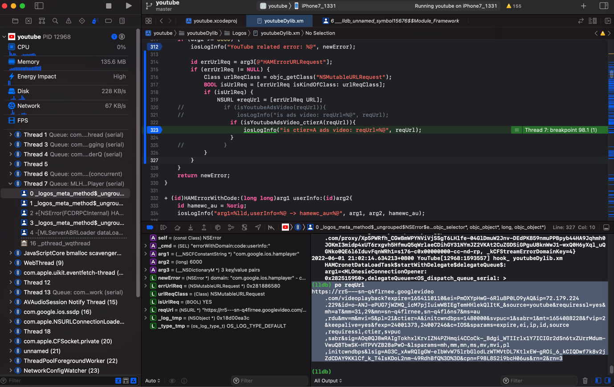
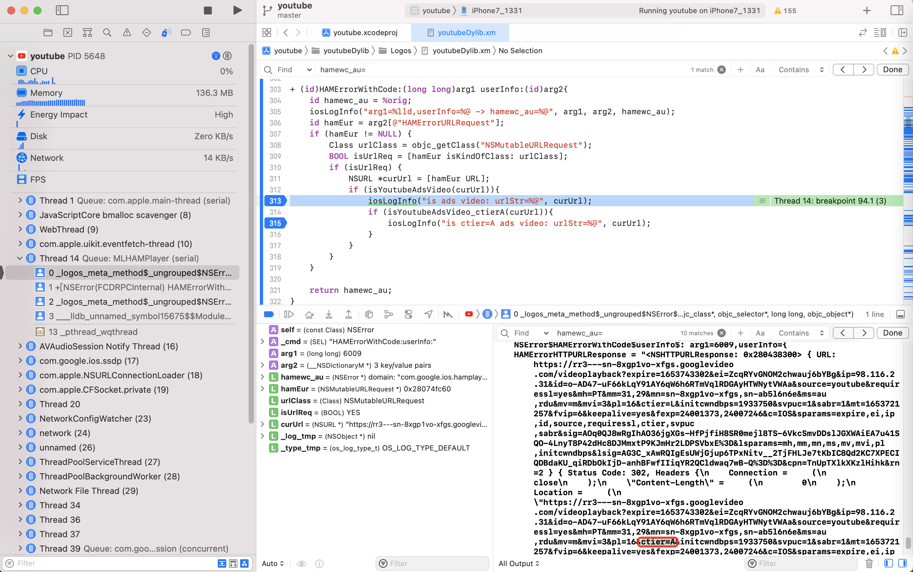
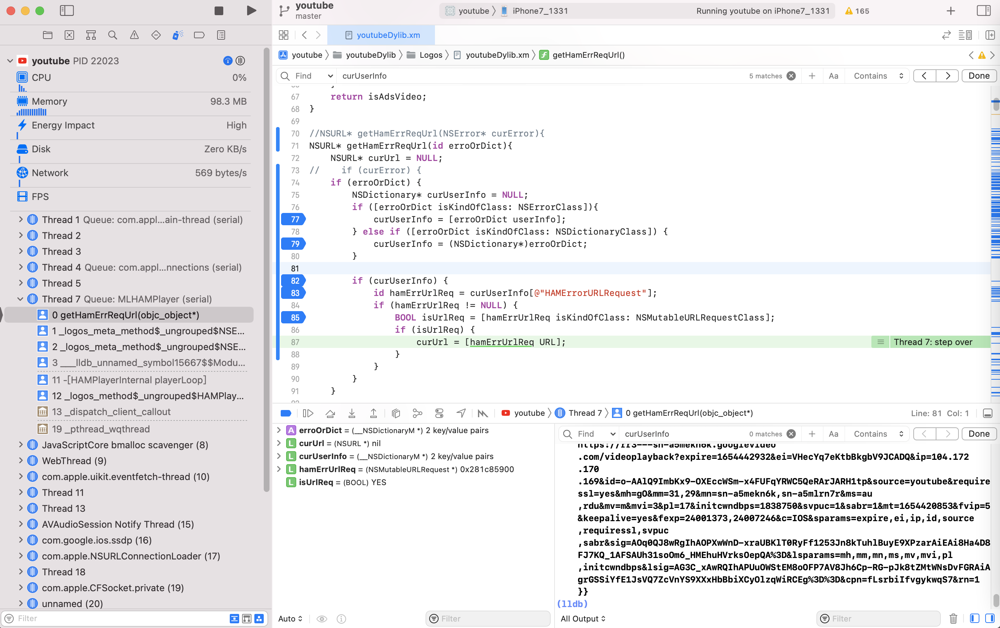

isKindOfClass
应用举例
AuthDaemonProtocolProxy
id AuthDaemonProtocolProxy = objc_getClass("__NSXPCInterfaceProxy_AKAppleIDAuthenticationDaemonProtocol");
//id AuthDaemonProtocolProxy = NSClassFromString(@"__NSXPCInterfaceProxy_AKAppleIDAuthenticationDaemonProtocol");
%hook NSXPCConnection
- (id)remoteObjectProxyWithErrorHandler:(void (^)(NSError *error))handler{
id rmtObjPrx = %orig;
iosLogInfo("rmtObjPrx=%{public}@", rmtObjPrx);
BOOL isAuthDaemonProtocol = [rmtObjPrx isKindOfClass: AuthDaemonProtocolProxy];
if (isAuthDaemonProtocol) {
gNoUse = 1;
}
return rmtObjPrx;
}
%end

NSHTTPURLResponse
- (void)_unsafe_provisionAnisetteWithCompletion:(void (^)(BOOL, NSError *))completion {
...
[session beginDataTaskWithRequest:request completionHandler:^(NSData *data, NSHTTPURLResponse *response, NSError *error) {
...
if (![response isKindOfClass:[NSHTTPURLResponse class]]) {
和：
static CFURLResponseRef createCFURLResponseFromResponseData(CFDataRef responseData)
{
...
if (![response isKindOfClass:[NSHTTPURLResponse class]])
_shortMethodDescription
(lldb) po [0x0000000120427c80 _shortMethodDescription]
<__NSCFLocalDataTask: 0x120427c80>:
in __NSCFLocalDataTask:
Instance Methods:
- (void) _onqueue_didReceiveResponse:(id)arg1 completion:(^block)arg2; (0x5c30dd01820f43dc)
- (BOOL) isKindOfClass:(Class)arg1; (0xda4fcc81820974fc)
(__NSCFLocalSessionTask ...)
NSURL
=========== [*] Detected call to: -[NSURL isKindOfClass:]
argSelStr: isKindOfClass:
argCount: 1
和：
/* TID 0x103 */
5609 ms -[NSURL _cfTypeID]
5611 ms -[NSURL path]
5611 ms | -[NSURL _cfurl]
7203 ms -[NSURL isEqual:0x2806e07e0]
7203 ms | -[NSURL isKindOfClass:0x1f2270158]
7203 ms | -[NSURL _cfurl]
7203 ms | -[NSURL _cfurl]
7203 ms -[NSURL _cfTypeID]
YTAdBreakRendererFetcher
void __cdecl -[YTAdBreakRendererFetcher makeAdRequestWithAdBreak:contentPlayerResponse:responseBlock:playbackContext:clientPlaybackNonce:midrollIndex:liveTargetingParams:adBreakLength:autonavSettingState:currentMediaTime:retryEnabled:](YTAdBreakRendererFetcher *self, SEL a2, id a3, id a4, id a5, id a6, id a7, signed __int64 a8, id inputLiveTargetingParams, double inputBreakLength, int a11, double a12, bool retryEnabled)
{
...
if ( objc_msgSend_3E84298(v21, "isKindOfClass:", v27) & 1 )
NSError
id __cdecl +[NSError HAMErrorWithURLResponse:userInfo:request:](NSError_meta *self, SEL a2, id a3, id a4, id a5)
{
...
if ( (unsigned int)objc_msgSend(v8, "isKindOfClass:", v16) )
errorWithDomain
+ (id) errorWithDomain:(id)arg1 code:(long)arg2 userInfo:(id)arg3{
id newError = %orig;
iosLogInfo("errDomain=%@,code=%ld, userInfo=%@ -> newError=%@", arg1, arg2, arg3, newError);
if (arg2 >= 6000) {
iosLogInfo("YouTube related error: %@", newError);
id errUrlReq = arg3[@"HAMErrorURLRequest"];
if (errUrlReq != NULL) {
Class urlReqClass = objc_getClass("NSMutableURLRequest");
BOOL isUrlReq = [errUrlReq isKindOfClass: urlReqClass];
if (isUrlReq) {
NSURL *reqUrl = [errUrlReq URL];
// if (isYoutubeAdsVideo(reqUrl)){
// iosLogInfo("is ads video: reqUrl=%@", reqUrl);
if (isYoutubeAdsVideo_ctierA(reqUrl)){
iosLogInfo("is ctier=A ads video: reqUrl=%@", reqUrl);
}
// }
}
}
}
return newError;
}

HAMErrorWithCode
+ (id)HAMErrorWithCode:(long long)arg1 userInfo:(id)arg2{
id hamewc_au = %orig;
iosLogInfo("arg1=%lld,userInfo=%@ -> hamewc_au=%@", arg1, arg2, hamewc_au);
id hamEur = arg2[@"HAMErrorURLRequest"];
if (hamEur != NULL) {
Class urlClass = objc_getClass("NSMutableURLRequest");
BOOL isUrlReq = [hamEur isKindOfClass: urlClass];
if (isUrlReq) {
NSURL *curUrl = [hamEur URL];
if (isYoutubeAdsVideo(curUrl)){
iosLogInfo("is ads video: urlStr=%@", curUrl);
if (isYoutubeAdsVideo_ctierA(curUrl)){
iosLogInfo("is ctier=A ads video: urlStr=%@", curUrl);
}
}
}
}
return hamewc_au;
}

TTInstallUtil
__text:00000000092EC444 ; id __cdecl +[TTInstallUtil onTheFlyParameter](TTInstallUtil_meta *self, SEL)
__text:00000000092EC444 __TTInstallUtil_onTheFlyParameter_ ; DATA XREF: __objc_const:00000000005F3588↑o
...
__text:00000000092ECD30 MOV X2, X0
__text:00000000092ECD34 ADRP X8, #isKindOfClass_@PAGE
__text:00000000092ECD38 LDR X1, [X8,#isKindOfClass_@PAGEOFF] ; char *
UIStatusBarDataNetworkItemView
-(void)networktype{
NSArray *subviews = [[[[UIApplication sharedApplication] valueForKey:@"statusBar"] valueForKey:@"foregroundView"]subviews];
NSNumber *dataNetworkItemView = nil;
for (id subview in subviews) {
if([subview isKindOfClass:[NSClassFromString(@"UIStatusBarDataNetworkItemView") class]]) {
dataNetworkItemView = subview;
break;
}
}
...
AWEPremainDelayInitTask
(lldb) po [objc_getClass("AWEPremainDelayInitTask") _methodDescription]
<AWEPremainDelayInitTask: 0x103c80470>:
in AWEPremainDelayInitTask:
Class Methods:
+ (void) stubForCheck; (0x110f957fc)
+ (void) execute; (0x1089c6910)
Properties:
@property (readonly) unsigned long hash;
@property (readonly) Class superclass;
@property (readonly, copy) NSString* description;
@property (readonly, copy) NSString* debugDescription;
in NSObject:
Class Methods:
+ (BOOL) bdp_swizzleClass:(Class)arg1 selector:(SEL)arg2 swizzledClass:(Class)arg3 swizzledSelector:(SEL)arg4; (0x1089af3f4)
...
+ (id) performSelector:(SEL)arg1 withObject:(id)arg2 withObject:(id)arg3; (0x1bda92b48)
+ (BOOL) isKindOfClass:(Class)arg1; (0x1bda75df8)
+ (BOOL) isMemberOfClass:(Class)arg1; (0x1bda92a74)
...
UIStatusBar_Modern
NSArray *infoArray = nil;
id statusBar = [[UIApplication sharedApplication] valueForKey:@"statusBar"];
if ([statusBar isKindOfClass:NSClassFromString(@"UIStatusBar_Modern")]) {
infoArray = [[[statusBar valueForKey:@"statusBar"] valueForKey:@"foregroundView"] subviews];
} else {
infoArray = [[statusBar valueForKey:@"foregroundView"] subviews];
}
UIStatusBarServiceItemView
- (IBAction)statusCarrierBtnClicked:(UIButton *)sender {
NSArray *infoArray = [[[[UIApplication sharedApplication] valueForKeyPath:@"statusBar"] valueForKeyPath:@"foregroundView"] subviews];
NSString *serviceString = @"?";
for (id info in infoArray)
{
if ([info isKindOfClass:NSClassFromString(@"UIStatusBarServiceItemView")])
{
serviceString = [info valueForKeyPath:@"serviceString"];
NSLog(@"公司为：%@", serviceString);
}
}
_statusServiceStrLbl.text = serviceString;
}
XCUIApplication.class
+ (int)writeXmlWithRootElement:(id<FBElement>)root
indexPath:(nullable NSString *)indexPath
elementStore:(nullable NSMutableDictionary *)elementStore
includedAttributes:(nullable NSSet<Class> *)includedAttributes
writer:(xmlTextWriterPtr)writer
{
...
XCElementSnapshot *currentSnapshot;
NSArray<XCElementSnapshot *> *children;
if ([root isKindOfClass:XCUIElement.class]) {
XCUIElement *element = (XCUIElement *)root;
NSMutableArray<NSString *> *snapshotAttributes = [NSMutableArray array];
if (nil != includedAttributes) {
for (Class includedAttribute in includedAttributes) {
[snapshotAttributes addObjectsFromArray:[includedAttribute performSelector:@selector(internalNames)]];
}
// Element types should always be there to build XML tree nodes
// Duplicates in this array are OK, since insternally it is anyway
// flattened to a set
[snapshotAttributes addObject:FB_ElementTypeAttributeName];
}
if ([snapshotAttributes containsObject:FB_XCAXAIsVisibleAttributeName]
|| 0 == snapshotAttributes.count) {
// If the app is not idle state while we retrieve the visiblity state
// then the snapshot retrieval operation might freeze and time out
[element.application fb_waitUntilSnapshotIsStable];
}
if ([root isKindOfClass:XCUIApplication.class]) {
currentSnapshot = element.fb_cachedSnapshot ?: element.fb_lastSnapshot;
...
FBClassNameToken.class
WebDriverAgent/WebDriverAgentLib/Utilities/FBClassChainQueryParser.m
+ (nullable FBClassChain*)compiledQueryWithTokenizedQuery:(NSArray<FBBaseClassChainToken *> *)tokenizedQuery originalQuery:(NSString *)originalQuery error:(NSError **)error
{
...
NSMutableArray<FBAbstractPredicateItem *> *predicates = [NSMutableArray array];
for (FBBaseClassChainToken *token in tokenizedQuery) {
if ([token isKindOfClass:FBClassNameToken.class]) {
if (isTypeSet) {
NSString *description = [NSString stringWithFormat:@"Unexpected token '%@'. The type name can be set only once.", token.asString];
*error = [self.class compilationErrorWithQuery:originalQuery description:description];
return nil;
}
@try {
chainElementType = [FBElementTypeTransformer elementTypeWithTypeName:token.asString];
isTypeSet = YES;
} @catch (NSException *e) {
if ([e.name isEqualToString:FBInvalidArgumentException]) {
NSString *description = [NSString stringWithFormat:@"'%@' class name is unknown to WDA", token.asString];
*error = [self.class compilationErrorWithQuery:originalQuery description:description];
return nil;
}
@throw e;
}
} else if ([token isKindOfClass:FBStarToken.class]) {
if (isTypeSet) {
NSString *description = [NSString stringWithFormat:@"Unexpected token '%@'. The type name can be set only once.", token.asString];
*error = [self.class compilationErrorWithQuery:originalQuery description:description];
return nil;
}
chainElementType = XCUIElementTypeAny;
isTypeSet = YES;
} else if ([token isKindOfClass:FBDescendantMarkerToken.class]) {
if (isDescendantSet) {
NSString *description = [NSString stringWithFormat:@"Unexpected token '%@'. Descendant markers cannot be duplicated.", token.asString];
*error = [self.class compilationErrorWithQuery:originalQuery description:description];
return nil;
}
isTypeSet = NO;
isPositionSet = NO;
[predicates removeAllObjects];
isDescendantSet = YES;
} else if ([token isKindOfClass:FBAbstractPredicateToken.class]) {
if (isPositionSet) {
...
HAMCronetDataLoadTaskClass
%hook MLHAMDataLoadTaskObserverImpl
- (void)dataLoadTaskDidStart:(id)arg1{
iosLogInfo("dataLoadTask=%@", arg1);
// BOOL isCornetClass = [arg1 isKindOfClass: HAMCronetDataLoadTaskClass];
// if (isCornetClass) {
...
NSErrorClass
Class NSMutableURLRequestClass = objc_getClass("NSMutableURLRequest");
Class NSErrorClass = objc_getClass("NSError");
Class NSDictionaryClass = objc_getClass("NSDictionary");
//NSURL* getHamErrReqUrl(NSError* curError){
NSURL* getHamErrReqUrl(id erroOrDict){
NSURL* curUrl = NULL;
// if (curError) {
if (erroOrDict) {
NSDictionary* curUserInfo = NULL;
if ([erroOrDict isKindOfClass: NSErrorClass]){
curUserInfo = [erroOrDict userInfo];
} else if ([erroOrDict isKindOfClass: NSDictionaryClass]) {
curUserInfo = (NSDictionary*)erroOrDict;
}
if (curUserInfo) {
id hamErrUrlReq = curUserInfo[@"HAMErrorURLRequest"];
if (hamErrUrlReq != NULL) {
BOOL isUrlReq = [hamErrUrlReq isKindOfClass: NSMutableURLRequestClass];
if (isUrlReq) {
curUrl = [hamErrUrlReq URL];
}
}
}
}
return curUrl;
}

NSNull
- (id)cb_objectForKey:(id)aKey{
id object = [self cb_objectForKey:aKey];
if ([object isKindOfClass:[NSNull class]]) {
return nil;
}else{
return object;
}
}
sub_69CDC88
__text:00000000069CDC88 sub_69CDC88
...
__text:00000000069CDD64 MOV X2, X0
__text:00000000069CDD68 ADRP X8, #isKindOfClass_@PAGE
__text:00000000069CDD6C LDR X1, [X8,#isKindOfClass_@PAGEOFF] ; char *
sub_100F6B4
__int64 __fastcall sub_100F6B4(__int64 result)
{
...
if ( (unsigned int)objc_msgSend(v4, "isKindOfClass:", v5) )